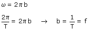
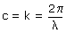

a) El coeficiente de t es la frecuencia angular  b es la frecuencia de la onda que se mide en Hz (1/s) El coeficiente de x es la constante de propagación  Las unidades de c serán: rad/m b) Un signo negativo en la fase espacio-temporal significa que la onda se propaga en sentido de x creciente, un signo positivo significa que se se propaga en sentido de x decreciente Sentido de propagación |